Note
This page is incomplete, I don't know when I will write a fully summed up guide for this. In the meantime if you know how to do this free to write a guide so I can replace this page with yours.
Requirements:
Audiokinetic Wwise (Needed for converting your sound files back to .wem) Unreal Engine 4.19.2 umodel Visual Studio 2017
Wwise Install Settings
You need to install Wwise 2017.2.6745 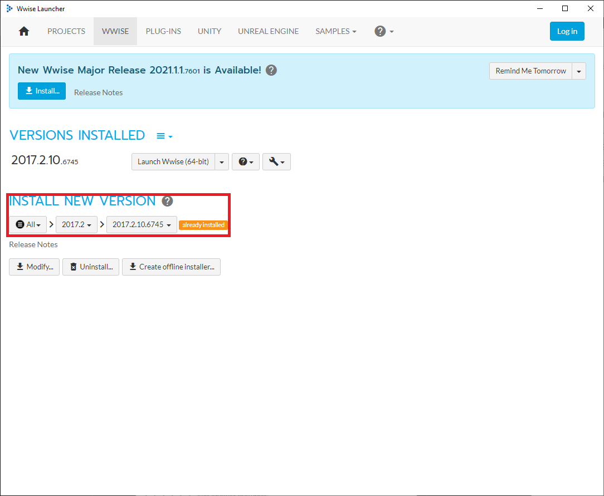
With the settings below: 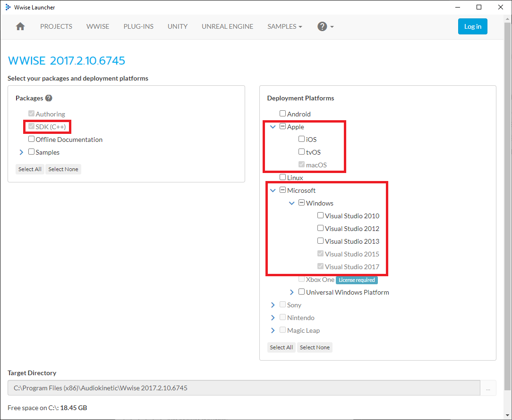
Disable all the plugins

Integration with Unreal Engine
Go to the Unreal Engine tab in Wwise. If you don't see any projects click on button, select Browse for project... and find your Unreal Engine project.
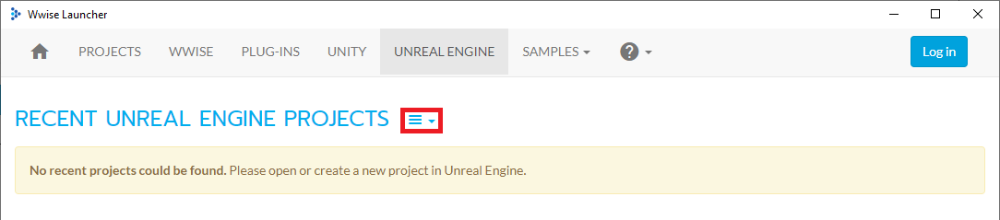
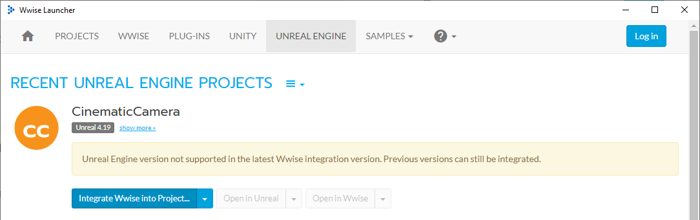
IF YOU GET AN ERROR LIKE THIS
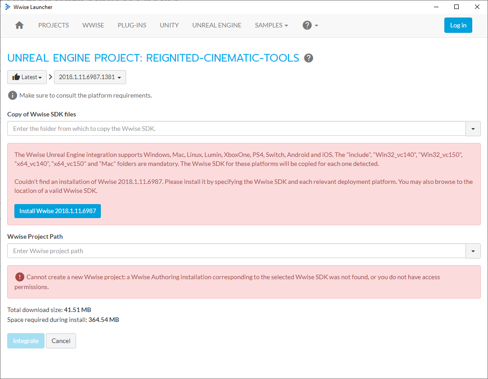
Change Wwise version to 2017.10.6745.1113 and press Integrate.
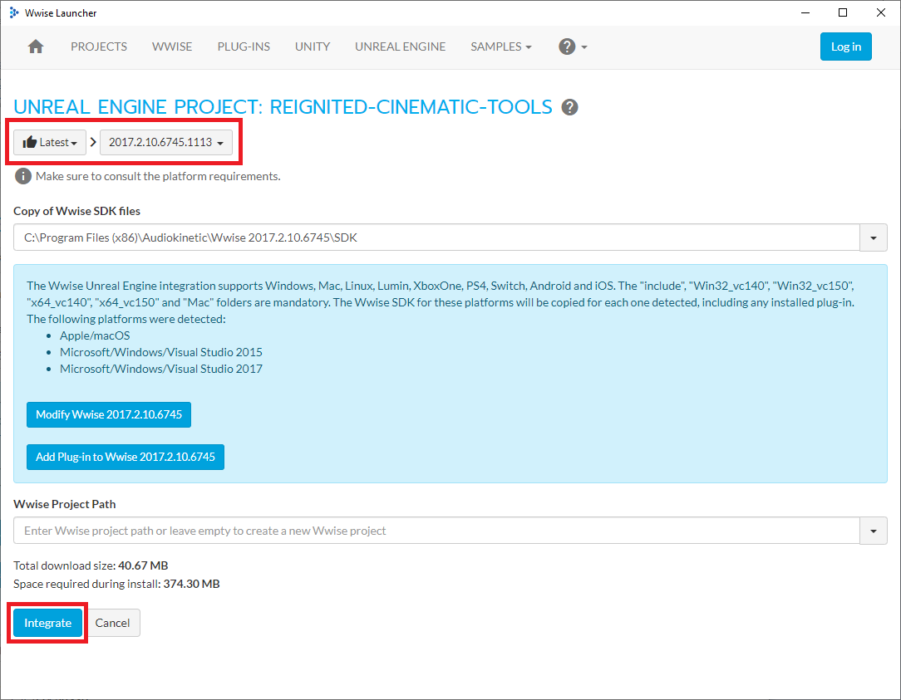
Now you will see Wwise downloading required files.
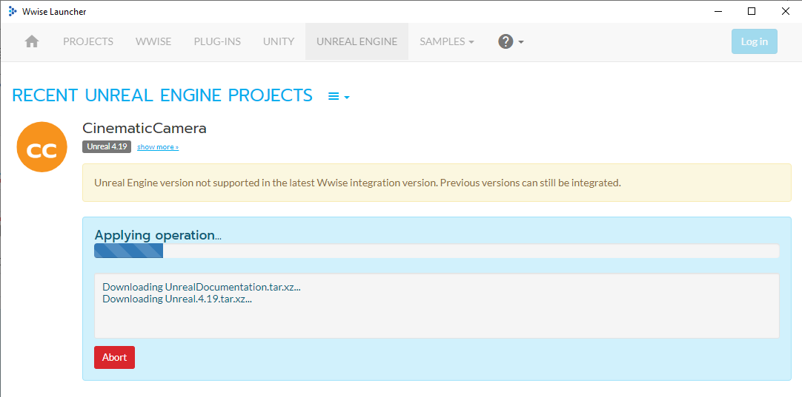
After downloads finished you should see Operation completed successfully. prompt.
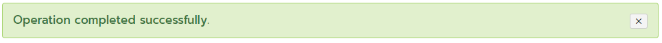
By default Wwise project will be in the Unreal Project's root folder with a _WwiseProject prefix.
Finding Sound Events
Use umodel to find the sound you want to replace.
To identify sounds, open any of the .uasset files inside sound folder and their class statistics should say AkAudioEvent. Ignore any file that have anything else suchh as AkAudioBank.
Note name of the sound you are going to replace without .uasset prefix
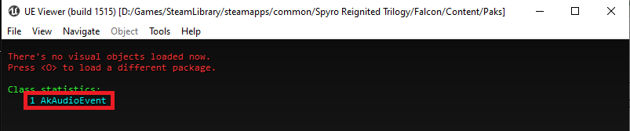
From here on out we're going to refer these sounds as Sound Events
Sounds are located at Plugins/Sound/Content
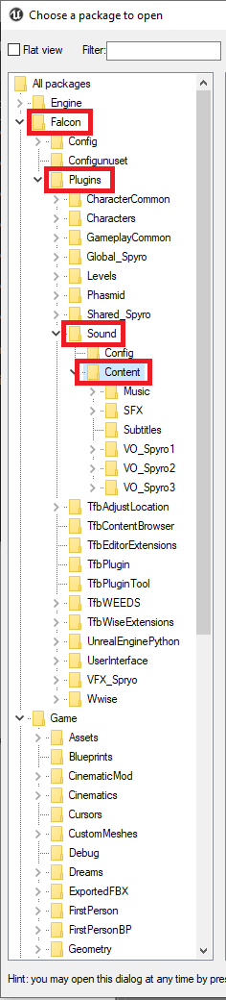
Importing Audio
By default Wwise should open with Designer layout. If not you can always change it by going to Layouts>Designer
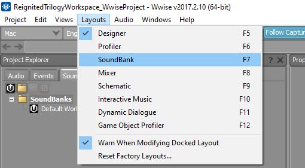
Start by creating a new "Sound FX"
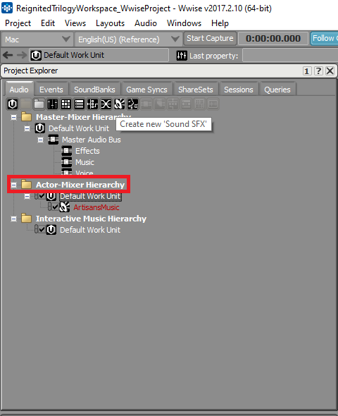
Right click on the newly created Sound FX and select Import Audio Files..., select your sounds on the opened pop-up.
After importing your sound, your Sound FX should turn from red to blue.
Making Sliders Work With Your Replacements and Looping Your Sounds
On the Audio tab and add three new "Audio Bus" below Master Audio Bus, call them Effects, Music and Voice
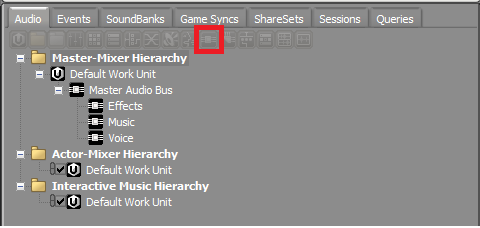
Next, select the Sound FX, this should switch right panel to the Sound Property Editor, change output bus to the corresponding audio bus. E.g. If it's a music set it's audio bus to Music.
To make your sound loop, enable Loop option.
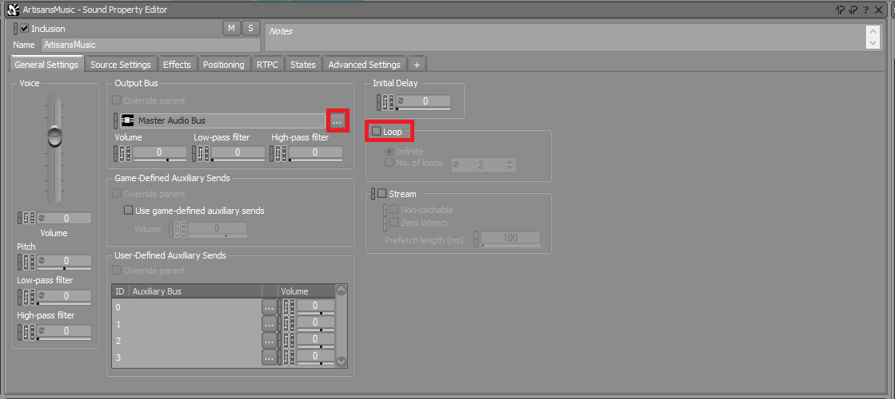
Creating Events And Adding Sounds To Events.
Remember the names you noted down? Now we are going to create them again in Wwise. Go to the Events tab in Wwise and create a Event.
Name of this event should match the exact same name from umodel without .uasset prefix.
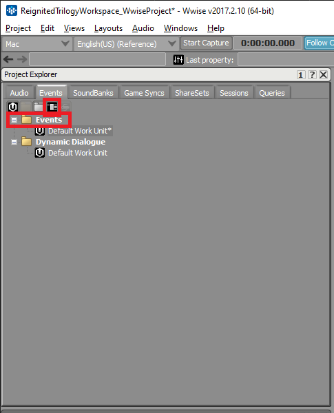
After creating your event, click on said event, this should switch to the Event Editor window (highlighted in red).
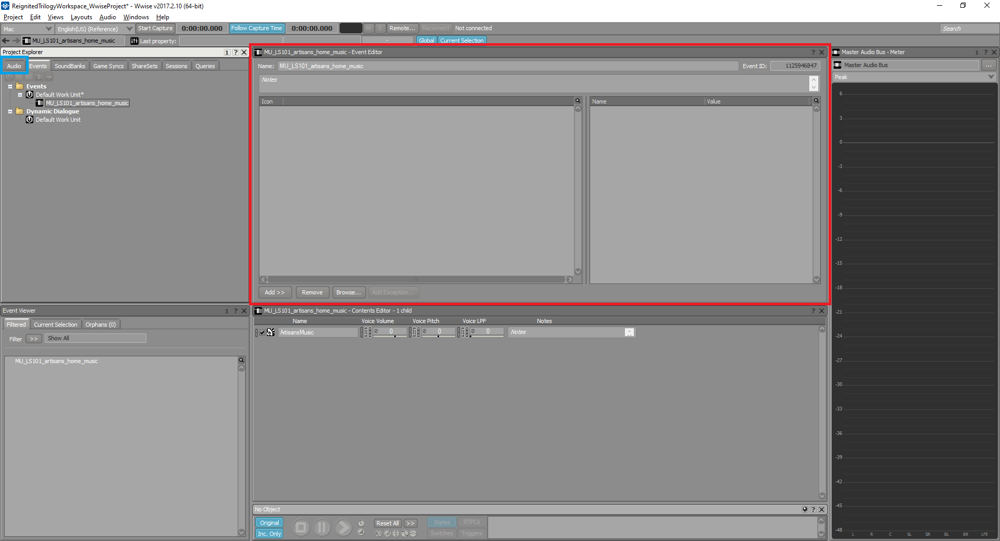
Next go back to the audio tab (highlighted in blue) and drag-drop your Sound FX into the Event Editor(higlighted in red) window.
Your Event Editor should look like this.
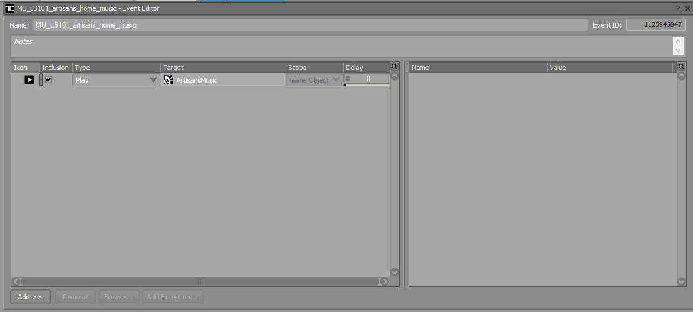
Creating Soundbank
Due to how Wwise works, your sounds are need to be in soundbanks in order for them to work with Unreal Engine.
Go to Layouts>Soundbank
In the new windows, press New and then name your bank file.
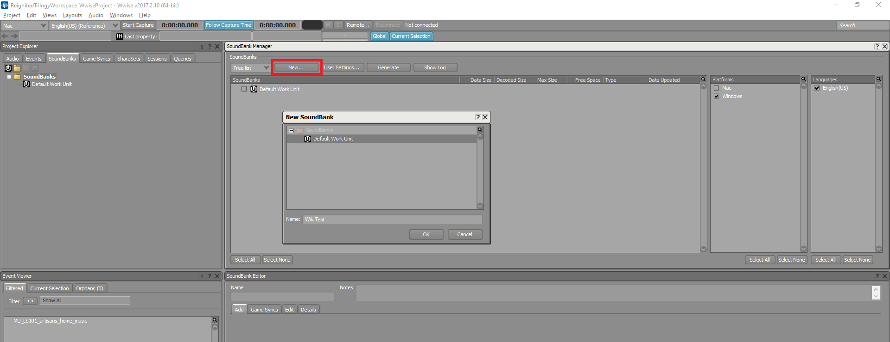
After creating your SoundBank, select it. Your Sound Events should be on the left bottom panel (highlighted in blue), drag and drop the Sound Event to the box highlighted in red. This will add your Sound Event into the SoundBank.